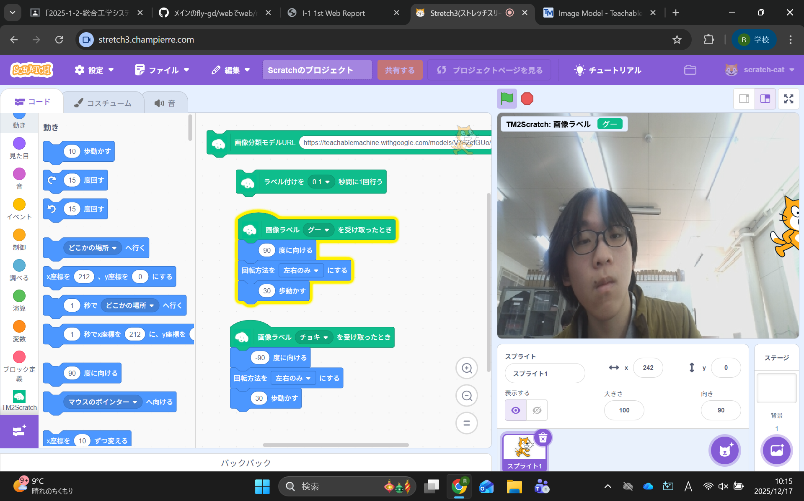
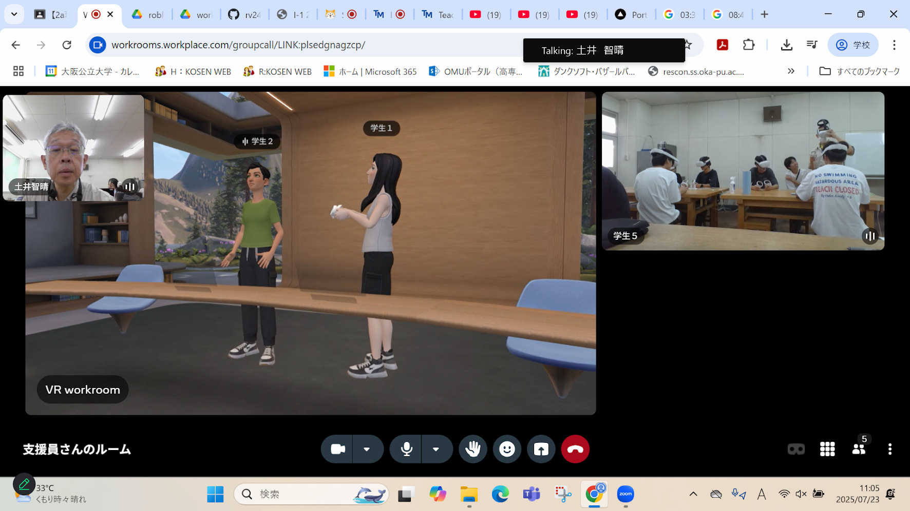
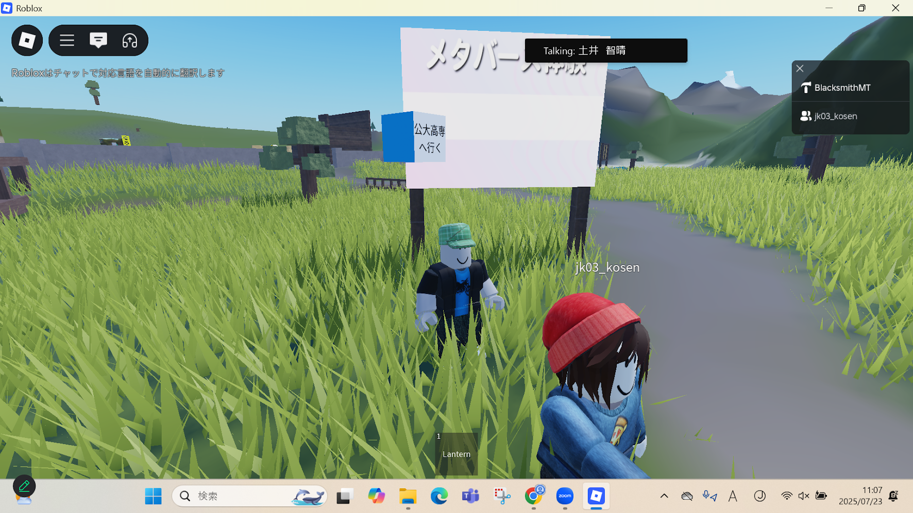

2週目のレポート ： 公大高専１年実習I-1
2班24番 フラギタ
第2週目
2-1 2週目のレポートをHTMLで作る
1.内容
Githubによって自分のレポートページを作り、rep02.htmlファイルを編集することによって、レポートを書いた。
2.感想
最初はどこをどう編集していけば、分からなかったが、自分で調べ、方法が分かると、意外と簡単であり、
今までページを作ることは難しいことだと思っていたが、まずはやってみる機会を作ることが大事だとおもった。
2-2 機械学習体験

1.内容
学習AIを用いて、じゃんけんのグー・チョキ・パーの３つの手の形を学習させ、
それをスクラッチのプログラムに組み込み、猫のイラストを手の形によって、操作できるようにした。
2.感想
AIを今まで、あまり積極的に使ったことがなく、初めて学習AIの使い方を知り、それをプログラムに組み込め、とても興味深かった。
2-3 VR（バーチャルリアリティー：Virtual Reality）の体験
 
1.内容
VRゴーグルとコントローラーを用いて、広大な自然、立体が設置された空間、会議室の３つのVRの世界を体験した。
2.感想
VRを体験してみるのは、初めてで、最初はゴーグルの付け方やコントローラーの操作方法も分からなかったが、
VRの使い方に慣れてくると、独特な操作感で、新鮮であり、とても面白かった。
各ページへのリンク
1週目のレポート
2週目のレポート
3週目のレポート
私のホームページ